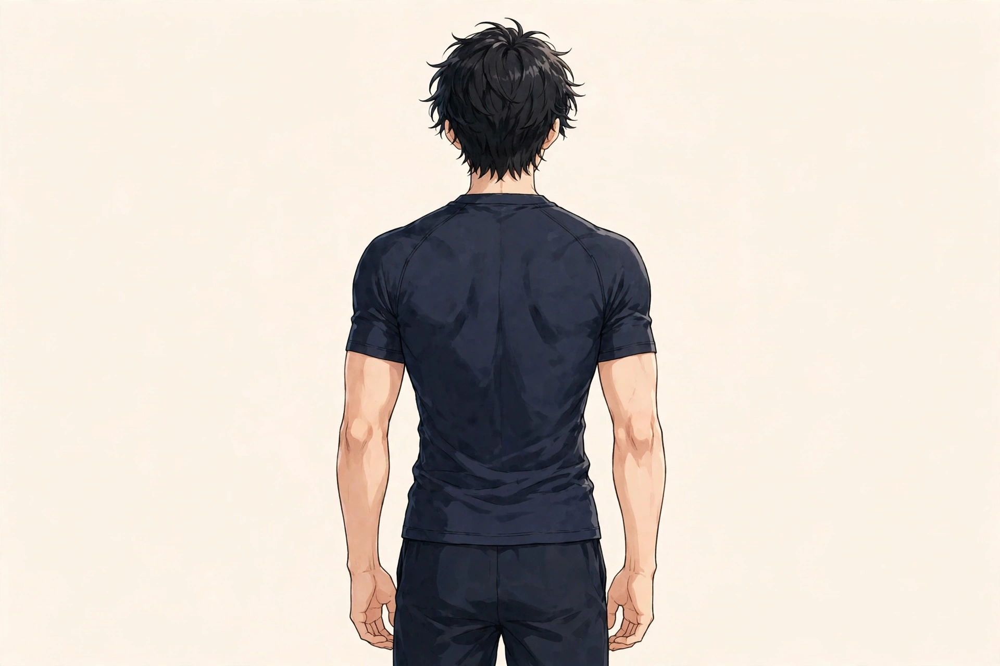
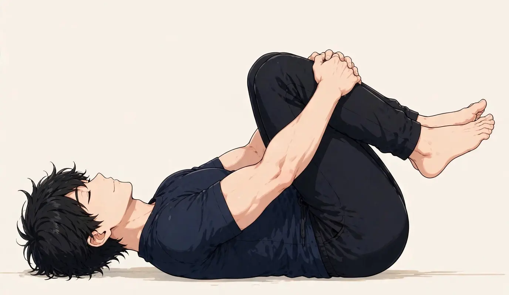

SYMPTOM GUIDE ｜ 東三国・新大阪
肉体労働の全身疲労でお悩みの方へ東三国・新大阪の男性専用整体院 北辰堂

建設・運送・製造・介護など、体を使う仕事の疲労は、全身に及びます。翌日に疲労を残さないことが、安全と継続の土台です。
肉体労働の疲労は、使う部位の偏りと、回復の不足が重なって蓄積します。このページでは、部位別の負担の考え方とローテーション、関係するツボ、セルフケア、受診の目安をまとめました。一般的な健康情報としてお読みください。
① 肉体労働の全身疲労とは
肉体労働の疲労は、重量物の扱い、反復動作、中腰や不自然な姿勢の持続が重なって起こります。負担は全身に及びますが、実際には「その仕事で特に使う部位」に集中します。腰と肩、腕と手、脚——担当作業によって、疲労の地図は人それぞれです。
問題は、疲労そのものより、回復しないまま翌日の作業に入ることです。睡眠と栄養による回復が追いつかない状態が続くと、筋肉の張りが固定化し、ぎっくり腰や腱の炎症など、故障の引き金になります。安全面でも、疲労の蓄積は注意力の低下につながります。
一方で、痛みが一点に集中する、しびれを伴う、関節が腫れるなどの様子は、疲労ではなく故障のサインの場合があります。無理を続ける前に、状態の確認が必要です。
持ち上げと中腰の負担は、背中から腰の筋肉群に集中します。使う部位の偏りが、疲労の地図を作ります。位置は目安です。
② 要因の整理
肉体労働の全身疲労の背景は、負担の偏りと回復の不足が重なっています。
- 使う部位の偏り：同じ作業の繰り返しは、特定の部位に負担を集中させます。偏りの自覚が、対策の出発点です。
- 重量物と中腰姿勢：持ち上げ動作と中腰の持続は、腰への負担が最も大きい組み合わせです。脚の力の使い方も関係します。
- 回復（睡眠・栄養）の不足：消費した材料を補う食事と、回復の時間である睡眠が不足すると、疲労は日をまたいで蓄積します。
- 部位別ローテーションの不足：担当作業を分ける、使う部位を日替わりにするなどの工夫がない現場では、同じ部位が休めません。
- 暑熱や寒冷の環境：屋外や冷蔵環境など、体温調節の負担が大きい現場では、疲労の総量が増えます。
- 年齢による回復の変化：年齢とともに回復に時間がかかるようになります。若い頃と同じ回復前提では、蓄積が進みます。
③ セルフチェックリスト
疲労の出方と、体の土台を振り返るためのチェックです。
- 翌朝まで疲労が残っている
- 特定の部位の張りが取れない
- ぎっくり腰を繰り返したことがある
- 手や腕のしびれを感じることがある
- 睡眠時間が不足している
- 食事を抜く日がある
- 同じ作業を毎日続けている
- 休日も疲労が抜けきらない
チェックは診断のためのものではありません。一点の強い痛み、しびれ、関節の腫れなどがある場合は、疲労と判断せず、⑧の受診の目安を先に確認してください。
④ 東洋医学から見た考え方とツボ
東洋医学では、全身の疲労は「気の消耗と巡りの滞り」と捉え、背中と腰のツボから整える考え方があります。背中を督脈と足太陽膀胱経が巡ります。
肩井・天宗・腎兪は、肩・背中・腰に関係する代表的なツボです。北辰堂では鍼灸施術は行いませんが、ツボの考え方は、体の緊張の状態を確認する施術の組み立てと、セルフケアの案内に活かしています。
肩井は首と肩先の中間、天宗は肩甲骨の中央、腎兪は腰の背骨の両脇にあります。位置は目安です。
ツボ：肩井（けんせい）
位置：首の付け根と肩先の中間にあります。肩まわりの張りの代表的なツボとして知られます。
押し方：反対の手の指で、ゆっくり圧を加えます。仕事終わりのケアに使います。
ツボ：天宗（てんそう）
位置：肩甲骨の中央のくぼみにあります。肩甲骨まわりの張りと結びつけて考えられるツボです。
押し方：壁と背中の間にテニスボールを挟み、体重でゆっくり圧を加えます。
ツボ：腎兪（じんゆ）
位置：腰の背骨の両脇にあります。腰まわりの疲労と結びつけて考えられる代表的なツボです。
押し方：手の甲を当てて温めながら、ゆっくり圧を加えます。就寝前のケアに使います。
⑤ 整体・リラクゼーションでの施術の考え方
北辰堂の施術では、まず、疲労の部位と経過、医療機関での確認を優先すべき様子（強い痛み、しびれ、腫れなど）がないかを確認します。そのうえで、使う部位の偏りに応じて、腰・肩・腕・脚の緊張の状態を確認し、全身のバランスを整える方向で施術を組み立てます。
肉体労働の方の体は、部位ごとの緊張の差が大きいことが特徴です。施術では、張りの強い部位を中心にしながらも、支える側の部位とのバランスを見ます。あわせて、翌日に残さないための、入浴・睡眠・栄養の整え方を案内します。
故障の診断と治療は医療機関の領域です。仕事中の受傷や、痛みが続く場合は、施術より先に受診と、労災を含めた確認を案内します。当院の役割は、体の緊張と回復に対するケアの補助です。
疲労の経過を把握するには、作業内容と、特に張りが残った部位を記録することが助けになります。自分の疲労の地図が見えてくると、休ませる部位の優先順位と、ケアの重点が決めやすくなります。痛みに変化があった場合（強くなった、しびれが出た等）も記録しておくと、医療機関での説明に役立ちます。記録は、安全に働き続けるための土台です。
施術の回を重ねるごとに、張りの残り方と回復の速さの変化も確認します。仕事の繁忙期に合わせたケアの間隔なども、体の変化を見ながら一緒に決めていきます。
⑥ セルフケア
セルフケアの狙いは、その日の疲労を翌日に持ち越さない条件をそろえることです。

①仰向けに寝る ②両膝を抱えて胸に引き寄せる ③呼吸しながら30秒ほど保ち、ゆっくり戻します。腰を休める動きです。
セルフケア1：仰向けの膝抱え
仰向けで両膝を抱え、腰を丸めて30秒ほど保ちます。腰の筋肉を休める動きです。痛みが強い日は行いません。
セルフケア2：入浴での回復
湯船に浸かって全身を温めます。温めることで巡りが助けられ、眠りの質の補助にもなります。夏場もシャワーだけで済ませない日を作ります。
セルフケア3：部位を休めるローテーション
可能であれば、担当作業の中で使う部位を日ごとに変える工夫をします。同じ部位に休む日を作ることが、蓄積を防ぎます。
セルフケア4：睡眠と栄養の確保
たんぱく質と十分な食事量、睡眠時間を、回復の材料として確保します。忙しい時期ほど意識が必要です。
⑦ 場面別の注意
- 作業中：重量物は脚の力を使い、体に近づけて持ちます。無理な姿勢での作業を繰り返さないことが、腰を守ります。
- 休憩中：座るだけでなく、張りの強い部位を軽く伸ばします。水分と塩分もこのタイミングで取ります。
- 帰宅後：入浴で温め、膝抱えで腰を休めます。その日の疲労を残さない流れを作ります。
- 休日：完全な休息だけでなく、軽い歩行で巡りを助けます。休日の過ごし方が、週明けの状態を左右します。
⑧ 受診の目安
- 一点に集中する強い痛みがある
- 手足のしびれや、力が入りにくい感じがある
- 関節の腫れや熱感がある
- 仕事中の受傷で痛みが出た
- 痛みが2週間以上続き、改善しない
- 発熱や体重減少を伴う
肉体労働の痛みには、椎間板ヘルニア、腱の炎症、骨折などが含まれる場合があります。仕事中の受傷は労災の対象になる場合もあるため、医療機関（整形外科）での確認と、職場への報告を優先してください。
⑨ よくある質問
Q. 毎日体が疲れています。整体は週何回がよいですか？
頻度の正解は状態によります。張りが固定化している時期は間隔を詰め、状態が安定すれば広げる、という進め方が一般的です。無理のない範囲を、体の変化を見ながら一緒に決めます。
Q. マッサージを受ければ翌日は楽になりますか？
施術で緊張をほどくことは、回復の補助になります。ただし、回復の土台は睡眠と栄養、負担の管理です。施術だけで翌日の保証はできませんが、残しにくい条件づくりを一緒に整えます。
Q. 仕事を休めない場合、どうすればよいですか？
作業の中で使う部位を変える、休憩で部位を休める、帰宅後の回復の流れを作る、といった積み重ねが現実的な対策です。痛みが強い場合は、まず医療機関で確認してください。
Q. ぎっくり腰を繰り返しています。予防できますか？
繰り返す背景には、腰まわりの疲労の蓄積と、持ち上げ動作の負担があります。日常のケアと体の使い方の見直しが助けになります。しびれを伴う場合は、医療機関での確認が優先です。
北辰堂のご案内
北辰堂は、大阪市淀川区東三国二丁目にある整体院です。男性スタッフ1人で運営しているため、男性専用としています。施術歴30年の平賀伸人（鍼灸師・国家資格）が、整体とリラクゼーションを行います。当院では鍼灸施術は行いません。営業は平日・土曜17:00〜22:00、日曜10:00〜22:00の完全予約制です。料金は60分 初回2,000円／2回目以降6,000円、90分 初回3,000円／2回目以降9,000円で、お支払いは現金のみです。プライバシーへの配慮のため、詳しい住所はご予約確定後にLINEでご案内します。
メニュー・料金は料金・メニューページ、施術者については当院についてをご覧ください。
関連するお悩み
ご予約・ご相談はLINEから
東三国・新大阪・淀川区周辺で、肉体労働の疲労の相談先をお探しの方は、LINE公式アカウント（北辰堂）からお気軽にご連絡ください。仕事内容と疲労の部位をお聞きしたうえで、施術の進め方をご案内します。
LINEで予約する